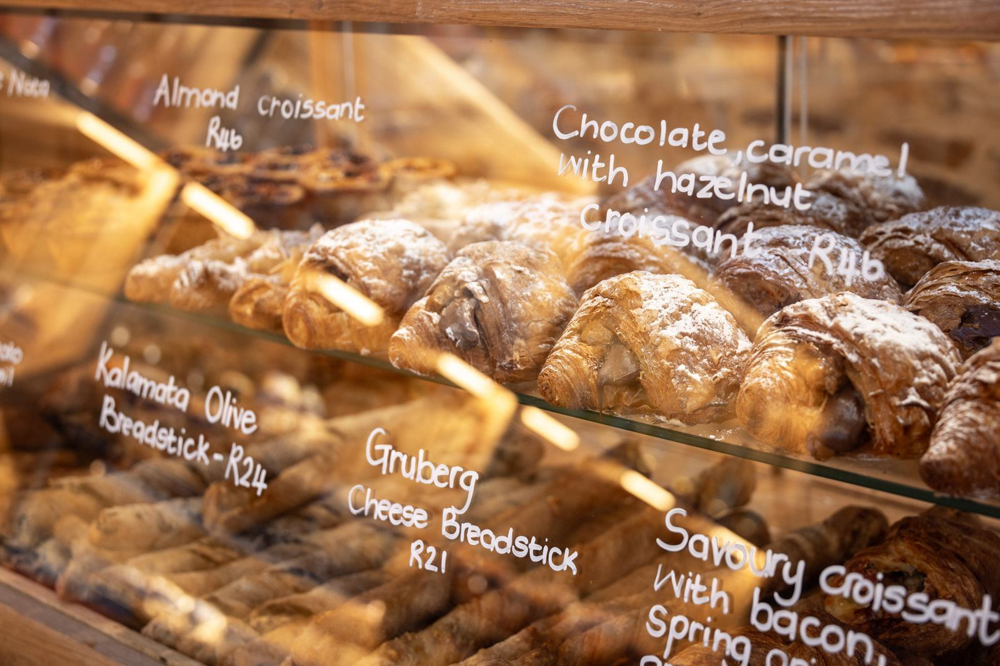
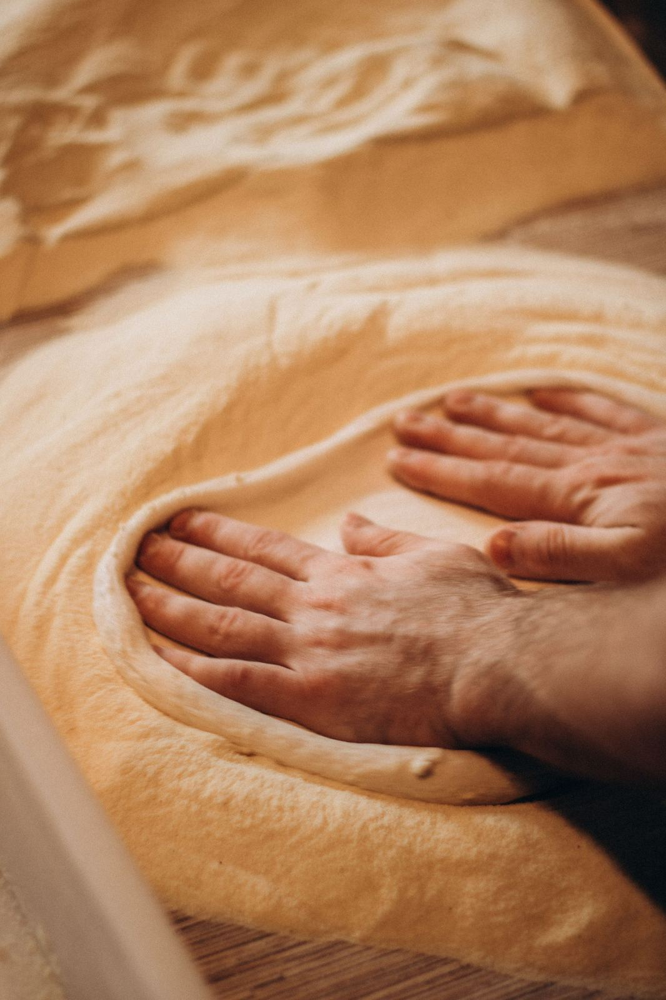
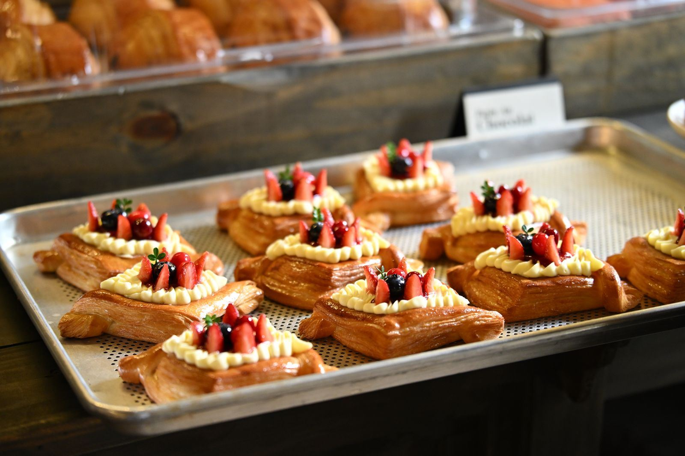

A family bakery since 1968
Old-world German baking, made fresh every morning
Carstens' Bakery has been a family-run German bakery in Idaho Falls since 1968. The cases hold kringles, danishes, eclairs, and pies, and the bread comes out of the oven through the morning.


Three generations at the bench
Founders Willi and Shannon Carstens opened the bakery in 1968 and built it on German recipes. Willi still bakes daily, starting at 6:00 in the morning, now alongside grandson Benjamin.
Inside the shop, a FAMILY wall of photos traces the generations who have worked the ovens. It is the kind of place where the staff knows the regulars and the regulars know the case by heart.
From the cases
A few of the things the shop is known for. The full case changes through the week.

Danishes, kringles, and pies
Apple cinnamon, cream cheese, and raspberry danishes. Kringles in the German style. Eclairs, huckleberry pastry, maple bars, raised donuts, and cream puffs.
Cherry, apple, blueberry, and peach pies. Breads, butterflake rolls, and cookies. And the turkey-ham sandwich regulars call the area's best.